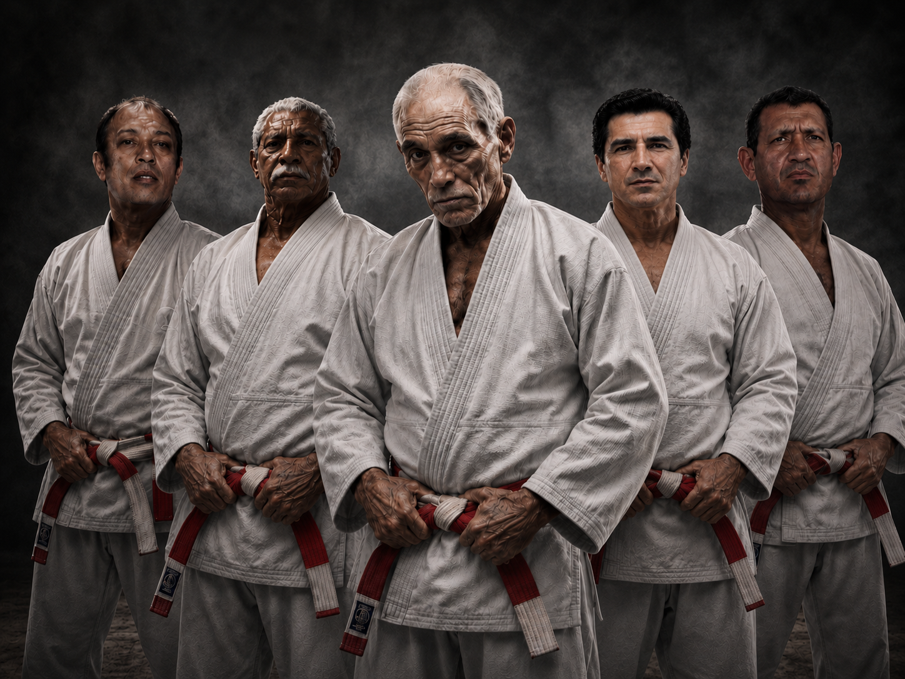
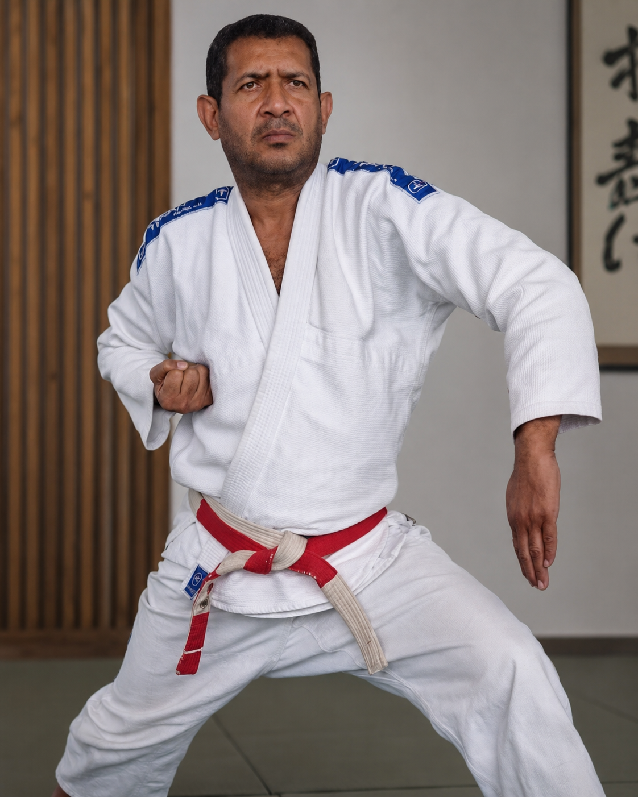

Base e Precisão
Cada postura, deslocamento e defesa começa pela base. A precisão nasce da repetição consciente, do equilíbrio corporal e da atenção aos detalhes ensinados pelos mestres.
Base, postura, defesa e espírito no caminho do Rame Seishin Jutsu
O Rame Seishin Jutsu une técnica, disciplina e conduta para formar praticantes conscientes.
Cada postura, deslocamento e defesa começa pela base. A precisão nasce da repetição consciente, do equilíbrio corporal e da atenção aos detalhes ensinados pelos mestres.
O RAI orienta a intenção do movimento. A força é educada pelo controle, pela respiração e pela capacidade de aplicar energia sem perder postura, respeito ou consciência.
A defesa pessoal é treinada como responsabilidade. O praticante aprende a proteger, conter e neutralizar conflitos sem transformar a arte em agressão desnecessária.
O treino desenvolve presença, humildade e respeito. A técnica só tem valor quando está acompanhada de postura moral, disciplina e compromisso com o caminho.
Os fundamentos do Rame não vivem apenas em nomes ou movimentos isolados. Eles aparecem na forma como os mestres corrigem a base, orientam a postura e transmitem disciplina dentro e fora do treino.
Por isso, cada etapa da prática valoriza a continuidade: aprender, repetir, compreender e aplicar com respeito.


A prática une corpo e mente em movimentos firmes, precisos e conscientes, mantendo a tradição viva dentro do dojo.
Treino de quedas controladas, entradas, desequilíbrios e projeções com atenção à segurança, ao tempo correto e ao uso inteligente da força.
Controles de posição, transições, imobilizações e finalizações treinadas com técnica, responsabilidade e domínio do próprio corpo.
Respostas práticas para situações de risco, com leitura de distância, proteção, saída segura e controle proporcional da ação.
Desenvolvimento da consciência marcial, da disciplina e dos valores que sustentam o Rame: respeito, lealdade, humildade e evolução contínua.
Construir postura, equilíbrio e disciplina por meio da repetição orientada pelos mestres.
Compreender o princípio por trás da técnica e usar o movimento com controle e precisão.
Transformar o treino em postura de vida, mantendo respeito, presença e responsabilidade.